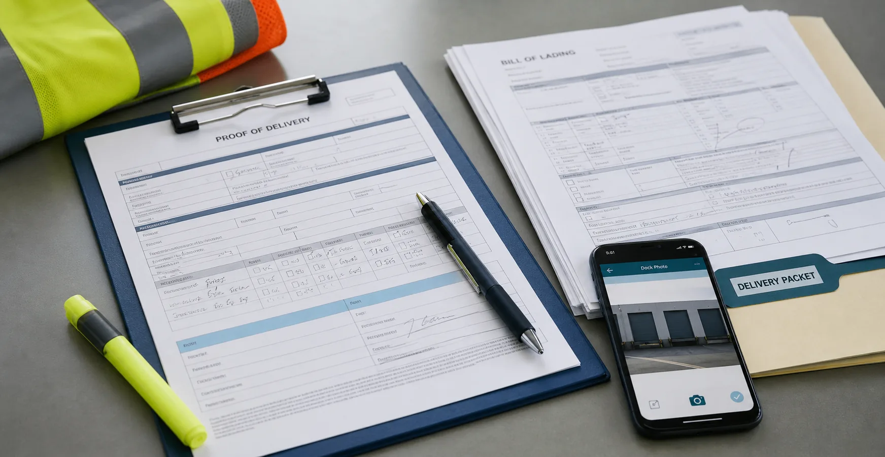

Imported packet
TMS-LD-10482 collects the TMS load, driver, carrier, pickup instructions, rate confirmation, BOL review, and owner action.
Document control
Turn uploads and inbox attachments into visible readiness evidence tied to the driver, load, carrier, and settlement.
TMS-LD-10482 collects the TMS load, driver, carrier, pickup instructions, rate confirmation, BOL review, and owner action.
Rate confirmation, driver medical status, and carrier insurance are current.
BOL-10482-IMG-02 needs S. Turner's confirmation before the release packet moves.
The release note explains whether TMS-LD-10482 can move or must stay in review.
Document view
Document control stays focused: what TMS provides, what BOF must review, which load it affects, who owns the next action, and what appears in the simulated handoff.
M. Alvarez · DRV-2048
Application, CDL, MVR, prior employment, medical card, and policy acknowledgements are aligned for TMS-LD-10482.
Load TMS-LD-10482
Rate confirmation is attached; BOL image is pending S. Turner's review before release.
Northline Freight · CAR-118
Auto liability and cargo coverage are current; certificate holder is confirmed for release review.
Photo is attached but still needs dispatcher confirmation before the watch status clears for the Kansas City lane.
Watch and hold packets
A serious back-office review should not only show the clean case. BOF keeps the watch item and the hold item readable too, so dispatch can see the exact record that changes the decision.
| Required item | Status | Owner | What changes |
|---|---|---|---|
| Updated medical card requested | Sent | Safety lead | Driver knows the record needed. |
| Credential attached | Pending | Driver / safety lead | Load remains held. |
| Safety review completed | Pending | Safety lead | Dispatch gate cannot clear. |
| Release gate updated | Pending | Operations lead | BOF-1931 stays out of assignment until cleared. |
POD and photo evidence
The client specifically called out POD detail: location, delivery proof, loading dock context, and the empty cargo area after delivery. BOF presents those fields as operating evidence tied to settlement, claims, and release follow-up.

These are representative proof panels for the buyer review. The important part is the operating shape: each image has a purpose, owner, consequence, and next action.
Company governance layer
The document view stays focused on release packets, driver files, BOL review, and carrier evidence. The governance layer explains the written controls behind AI assistance, mobile uploads, vendor access, and continuity.
Supports AI-assisted review while keeping release decisions human-verified.
DAT-IT-008Supports driver uploads, mobile capture, ELD-related records, and field document handling.
DAT-IT-006Supports TMS, ELD, carrier packet, and third-party system access review.
DAT-IT-014Summarizes how sensitive response and continuity records are handled during due diligence.
Security reviewDocument photo proof
These supporting images show document requests, scanning, exception packets, and field proof as part of the same operating record.
Paper documents are captured before they become another follow-up chase.

Requests, reminders, received status, and approval should be visible.

Higher-scrutiny work needs clean packet ownership and review history.

Private fleet proof still needs owner, status, and consequence.
Next step
Documents should explain release decisions, not sit in a disconnected vault. Continue to see how TMS-LD-10482 moves once the remaining record is reviewed and the simulated handoff is prepared.